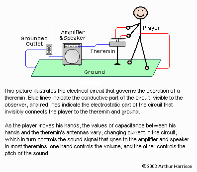
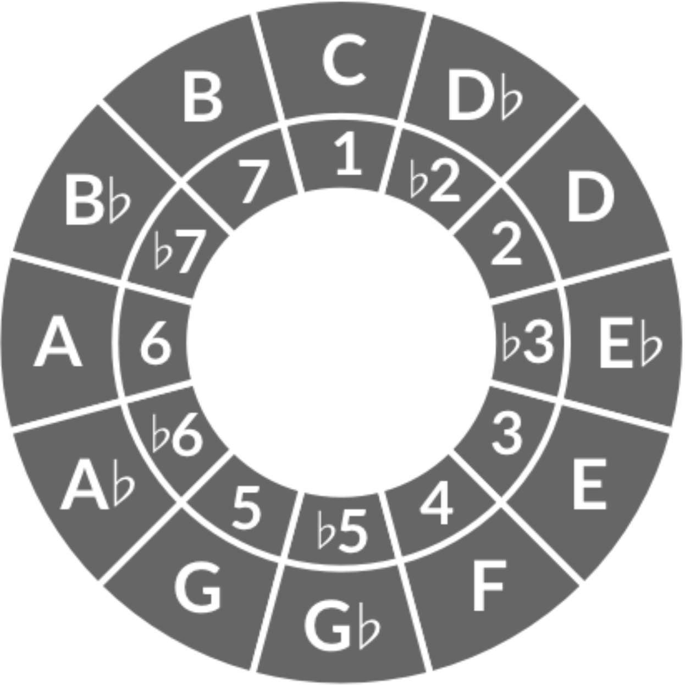
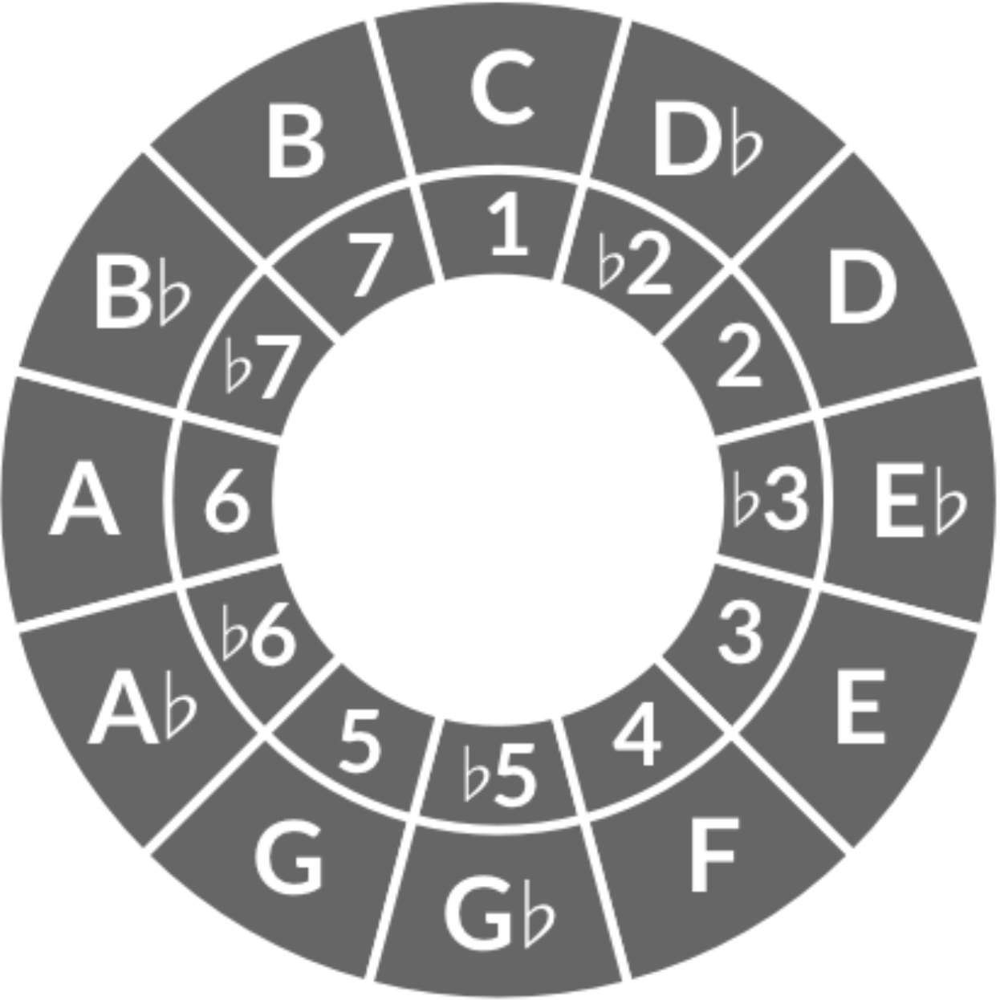
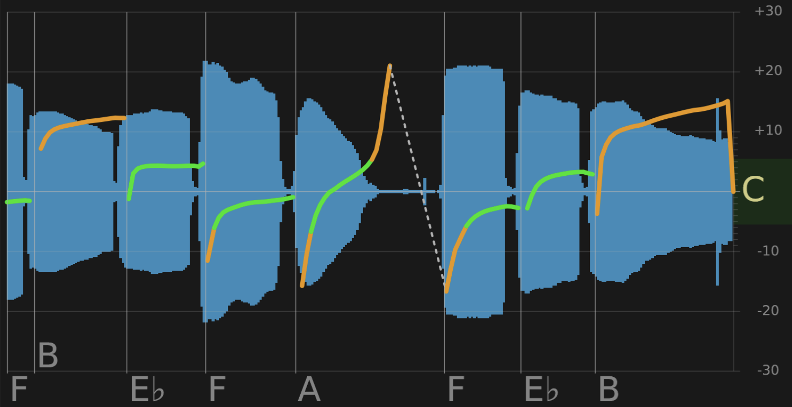
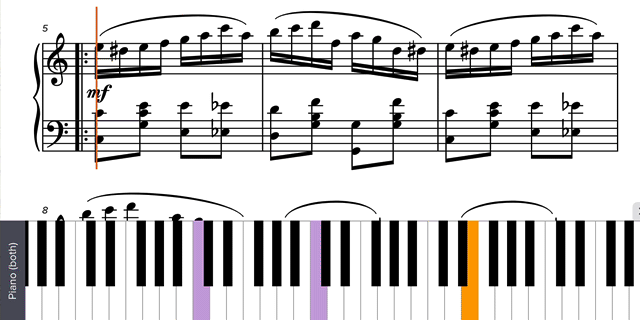

Welcome to my PS70 portfolio! I hope you enjoy learning more about my project for PS70: Intro to Digital Fabrication.
01: Introduction + Project Proposal
My Goals
I'm interested in learning more about how to make physical stuff, especially where electronics are involved. However, I have no experience with anything 'physical', so I want to focus on developing those skills essentially from scratch. In particular, three components seem really important to me:
- Electronics : I know nothing about electronics. This is sad because I use electronic devices constantly, and so I would love to focus on a project which centers these basic building blocks.
- Sensors : I'm interested in learning more about how we "talk" to machines using hardware. So, I'm hoping to incorporate sensors which can be interacted with in an intuitive way to produce interesting outputs.
- Aesthetics : I also want to get better at making products which look clean and complete — no dangling wires.
With these thoughts in mind, here's my working project proposal:
My Project
For my project, I would like to create Ther-e-MAN, your personal theremin instructor!

The theremin is an electronic instrument invented in 1920 by Soviet physicist Lev Sergyevich Termen (anglocized Leon Theremin). It first spread to the US via a soviet propaganda tour but only entered widespread use forty years later, when American manufacturers began producing their own theremins. It produces a super unique sound, which I associate with alien movies and TV shows.
How it Works
(Warning — I don't understand electronics YET, so read at your own risk). The theremin is made of two antennae — one which controls pitch, and another that controls volume. Each circut has two capacitors, one which oscilates at a consant frequency, and another which is formed between your hand and the antenna. This means that for each input you have two signals: one that's fixed relative to the ground (the fixed oscillator), and the other which varies based on your hand's proximity to the antenna (the variable oscillator). With this setup, we can do something called Heterodyning, which mixes two high-frequency signals to create a low-frequency output signal. That way, we can either use that analog signal to immediately play a sine wave of the given frequency, or we can send the signal to a computer for further processing.

Ther-e-MAN
(Working name).
As I see it, the modern theremin has two major problems:
- There is no way to tell which pitch you are playing without a reference or perfect pitch. This makes the process of sight reading, solo playing, and learning much more difficult.
- Though constant playing data is collected by the theremin, it's all thrown away immediately — there's no way to naturally learn about your playing with this information.
These two problems inspire my project. Ther-e-MAN will be a fully functional theremin with tunable pitch, with two (three) major alterations:
- An LED strip will constantly map analog pitch signal to a corresponding color on an attached LED array, so that every C will correspond to red, and pitch will cause the color to continuously vary along the color wheel. (Optionally, if there's time, make the color tunable so you can choose your own set of colors to use).
 
 - All playing information will be fed via bluetooth or Wi-Fi to any device with the accompanying software, which will give real-time feedback about your playing. For example, given a reference key, it can tell you how many cents you deviate from the pitch center on average, and identify especially problematic intervals.
 - In the most ambitious form of this project, we could take any piece of music (say, written using MuseScore) and, adding only some basic metadata, have a score that you can 'play along' with, returning the number of correct notes, identifing problem sections, and possibly tracking some sort of cumulative score a-la Elo ratings.

It seems as though building a simple homemade theremin isn't terribly difficult — at least it's familiar enough that there exist both YouTube and written tutorials already online. However, I have no idea how feasible it is to add the corresponding color, and I also know nothing about relaying signals via wifi to software.
It's important to me that this is a pretty modular project — there's a minimal set of features that I think are really important (a working theremin), others that are highly desirable (LED-mapping), and then a final set of features that I can make basically as complicated as I want (the corresponding teacher software). In all, I'm excited to begin working on the project!
—Thomas